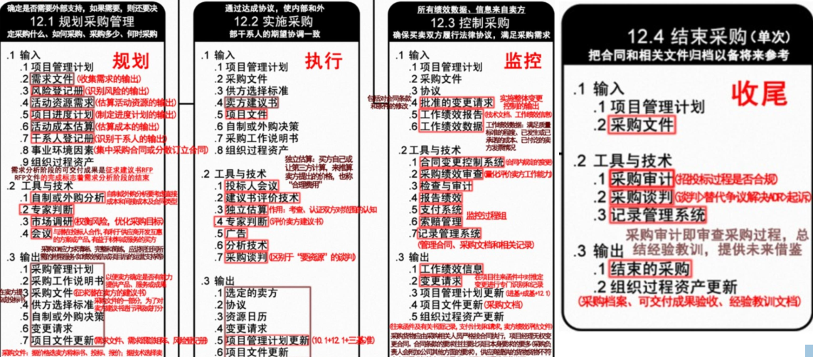

分值：1分
综合图谱

采购管理的过程
- 规划采购管理：采购什么、何时采购，如何采购，需要亲耐供应商
- 实施采购：获取信息、报价、投标书或建议书。选择供方，谈判合同
- 控制采购：管理合同和买卖双方的关系，监控合同执行，管理变更
- 结束采购：合同收尾，完成并结算
采购管理的执行步骤：
- 需求确定与采购计划制定
- 供应商搜寻和分析
- 定价
- 拟定并发出定单
- 定单的跟踪和跟催
- 验货和收货
- 开票和支付贷款
战略合作
- 摒弃“以企业为中心”的管理模式，采用现代战略合作的管理模式
- 形成于集成化供应链管理环境下
- 强调共同努力，实现共有的计划，解决共同问题
- 强调相互信任
供应商选择
- 考虑因素：价格、质量、服务、未知、供应商的存货、柔性
- 选择指标体系的三大主要因素
- 供应商的产品价格
- 质量
- 服务
- 供应商评估方法：
- 供应商走访
- 招标法
- 协商法
- 评价依据
- 供应商资质
- 供货的质量保证能力
- 产品的价格质量
- 售后服务能力
不合格产品的处理方法
- 退货
- 调换
- 降级改作他用
采购入库的条件
- 采购产品验证完毕后，合格的产品，《进货检验记录单》
- 库房核对采购设备对应的项目准确无误
- 供应商提供的运货单或者到货证明
采购文件
- 采购工作说明书
- 来自于项目范围基准
- 描述足够的细节，用于卖方确定他们是否能提供所需的产品或服务
- 描述了由卖方提供的产品、服务、成果
- 采购档案保存期限分为
- 永久
- 长期（30年）
- 短期（10年）
- 采购合同的必备条款
- 商品名称
- 质量条款
- 数量和计量单位
- 商品价格
- 交货的期限、地点和方式
- 产品的包装标准和包装物的供应回收
- 商品的验收方式
- 违约责任
- 结算方式